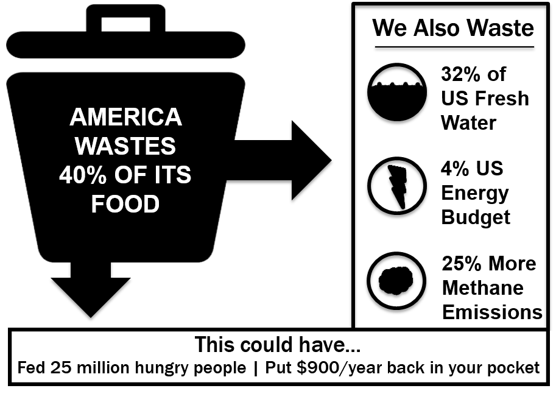
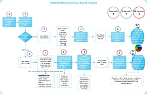

An application that helps the U.S. consumers minimize their food waste and save money.
Currently U.S. consumers waste a lot of the food they buy despite the fact that they want to prevent food waste and are interested in a smart way to manage their inventory. We have designed the EatWell system, which offers the ability for users to easily add and manage their food using a smartphone application. It is a multi-phase development project. In this first phase, we have developed an application that reminds users of expiring items in their inventory and walks them through the process of using it by either offering recipe suggestions or facilitating a gift/trade transaction with another user.
We firstly conducted user/background research, and then decided to focus our efforts on three primary scenarios / user task and one secondary scenario. 1) Receiving a food expiration date reminder and taking action to cook the expiring food. 2) Receiving a food expiration date reminder and taking action to give the expiring food away. Secondary: receiving reaffirming messaging, gamified achievements, & progress info. By focusing on these two scenarios we are able to test out two of the key actions users can take to defer their expiring food from going to waste.
We wanted to test out the experience with one of the most differentiating / controversial feature of gifting/trading food via a social food trading network to gauge user reaction. Secondarily, we wanted to gauge user reactions and desires on receiving some sort of reward or confirmation that the user hasn't only just saved money, but they are also helping to make the world a better place.
Full interactive wireframe prototype is linked here.
We practiced a first-round UCD iteration, which comprises of investigation, ideation, prototyping, evaluation, and revise the prototype reflecting the evaluation. Our team used three methods to triangulate our user research; user survey, fly on the wall, and competitive / market analysis. During the ideation phase, we met as a team to brainstorm design ideas, sketch them out, and then critique and filter to reach our revised design options. After evaluating several options, we chose to create a clickable wireframe prototype that could be tested via a web browser or smartphone. The team then conducted user evaluations on the interactive prototype via both browser and smartphone. The resulting feedback and observed behaviors directly helped us refine our design, particularly when users pointed out things we did not realize before. As we recognize that it’s impossible to meet everyone’s needs, the team discussed all the feedback and made decisions together on which resulting refinements to make.
Detailed design process is available here.
User Research, Ideation, Prototyping(High-fidelity), Evaluation, Documentation
To see more detailed design process, please refer to Detailed Blog .
More details are available on request. (Full data report might include some privacy issue)